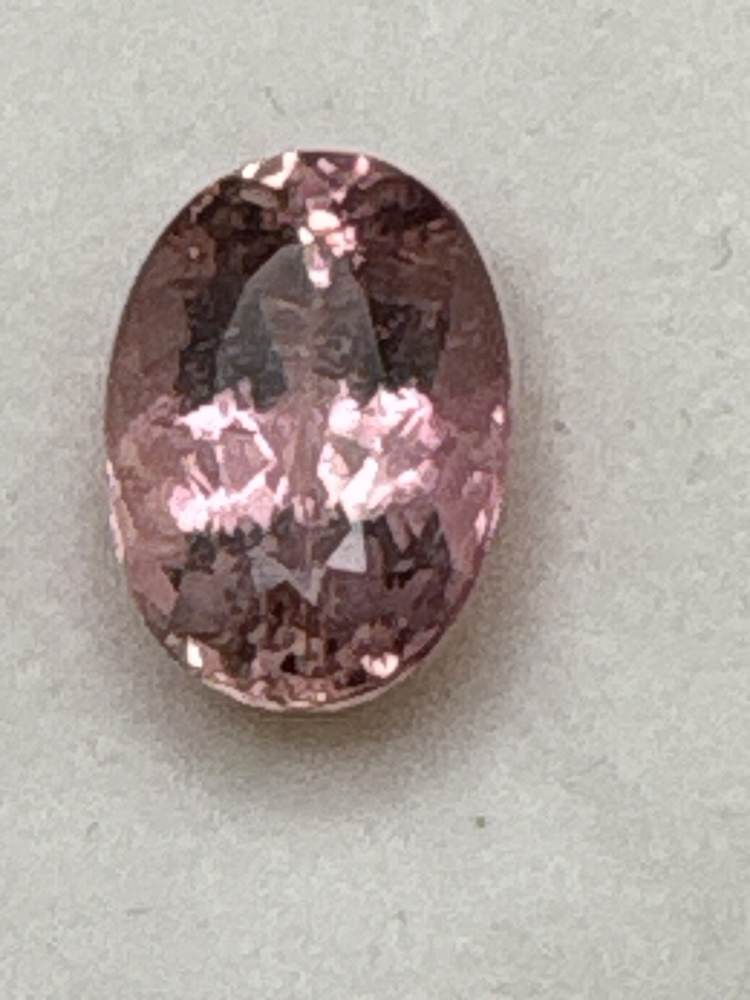

The Gem Drawer › No. 34

A clean single pink oval, weight confirmed twice on the box.
| Catalogue no. | #34 |
|---|---|
| As labeled | Tourmaline |
| Shape / cut | Oval |
| Weight | 4.61 ct |
| Measurements | Not recorded |
| Colour | Pink |
| Clarity / condition | Not recorded |
Interested in this stone, or in the collection as a whole? Terry VanWormer can answer questions about it.
Click here to inquireor email Terry directly at maxrebo34@gmail.com